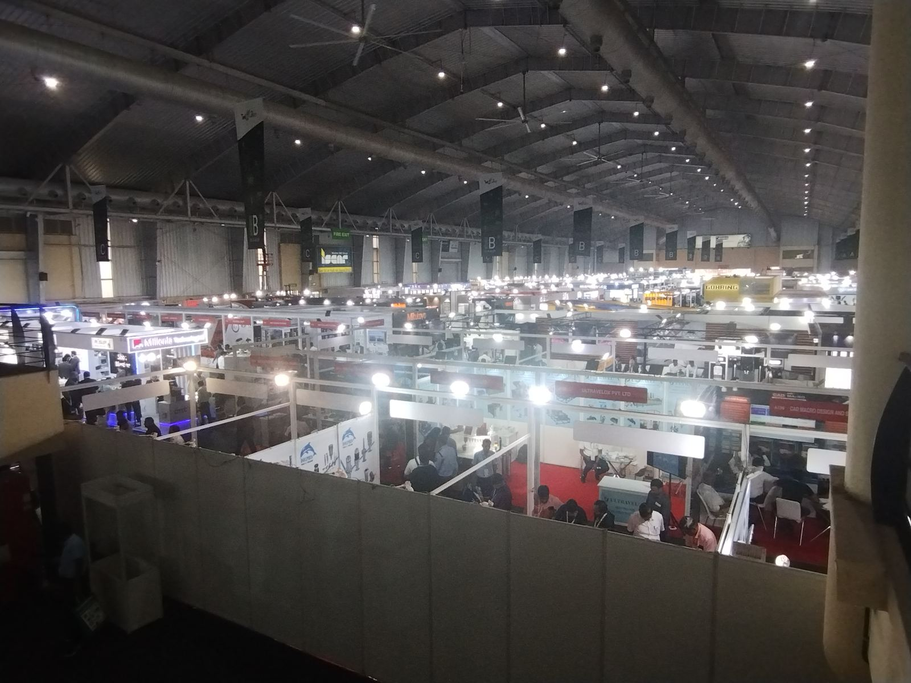

Expos · Expos
IMTEX 2027
- Dates
- –
- Venue
- Bangalore International Exhibition Centre (BIEC), 10th Mile, Tumkur Road, Bengaluru 562 162
- Location
- Bengaluru, India
- Format
- In-person
- Category
- Expos
- Industry
- Machine tool and manufacturing technology exhibition
- Organiser
- Indian Machine Tool Manufacturers' Association (IMTMA)
- Official website
- https://www.imtex.in/
About
Dates are local to the host city. Tooltech and Digital Manufacturing run concurrently and are folded. Official visitor hours 10:00–17:00; exhibitors 09:00–18:00; visitors under 16 not admitted. 8 halls, 85,000 sqm, 1,300+ exhibitors (official 'at a glance' figures; not stored as attendance).
Topics: machine tools, manufacturing, industry 4.0, automation.
Sources
- Official — https://www.imtex.in/
Venue
- Bangalore International Exhibition Centre — Convention centre · 10th Mile, Tumkur Road, Bengaluru 562 162, India